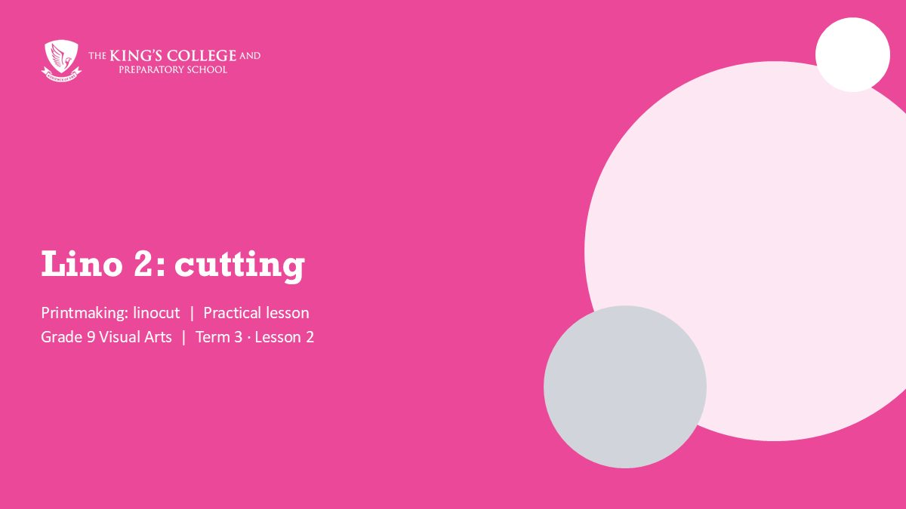

Term 3 · Lesson 2 · Practical lesson
Lino 2: cutting
Start here
Today I will
- Cut away the areas that must stay white
- Outline first, then clear
- Check my block against my design as I work
Think first
Before you cut: point to one area of your block that must stay white and one that must print black.
Words to know
- Relief
- A raised surface; in lino it is the part that prints.
- Cutting away
- Removing lino from areas that must stay white.
- Clearing
- Removing larger areas of lino with the U-gouge.
- V-gouge
- For outlines, fine lines and details.
- U-gouge
- For clearing larger areas.
Slides

Notes
Cutting away the areas that must stay white; outlines first with the V-gouge, then clearing with the U-gouge; checking the design.
Order of cutting
- Outline: V-gouge around the edges of the black shapes, just outside the marker line.
- Clear: U-gouge to remove the large white areas.
- Shallow is fine: Cut about a third of the depth; do not dig through the lino.
- Check: Compare the block with your design every ten minutes.
Common cutting problems
| Problem | Fix |
|---|---|
| The gouge slips | Lower the angle and make shorter cuts. |
| A black line was cut off by mistake | Adapt the design; it cannot be glued back. |
| Rough white areas print marks | Clear them a little deeper, or keep them as texture. |
| Hand is tired | Rest for a moment; tired hands slip. |
Remember
Outline with the V, clear with the U, always cut away from you.
Think about it (Colossians 3:23)
'Whatever you do, work at it with all your heart.' What does careful, patient work look like when cutting a lino block?
Practical
You need: Lino block, V- and U-gouges, bench hook
Cut the main block
- Set up your bench hook and place the block against the far lip.
- Outline all the black shapes with the V-gouge.
- Clear the large white areas with the U-gouge.
- Turn the block for curves; keep cutting away from you.
- Check your block against the design every ten minutes.
- Pack up: gouges in the box, shavings in the bin, block labelled with your name.
Test yourself
- Which gouge do you use first, and for what?
- How deep should you cut?
- What should you do if you cut off part of a black area?
Show answers
1. The V-gouge, to outline the black shapes. 2. Shallow, about a third of the lino's depth. 3. Adapt the design, because lino cannot be put back.
Finished early?
Rescue a cut
Plan how to adapt a design when a cut goes wrong.
- Draw a small copy of part of your design in your VJ.
- Imagine a black line was cut off by mistake and mark where.
- Draw two ways to adapt the design, such as turning the cut into a pattern or a new white shape.
- Write which idea you would choose and why.